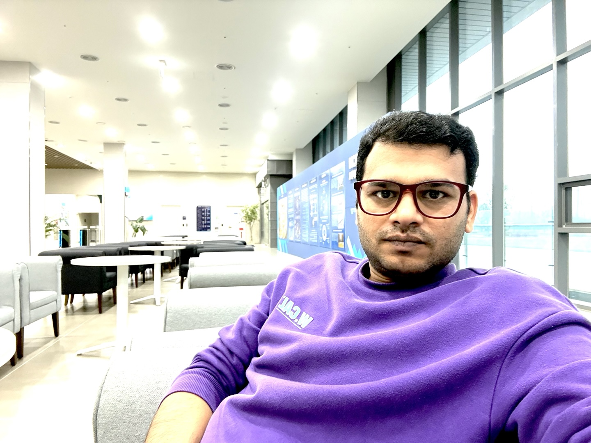

Hassan Asghar
Ph.D. Researcher · KENTECH
I am a Ph.D. researcher at KENTECH working on high-performance computing, cloud and edge systems, big data analytics, and network protocol security. My research interests center on building reliable and secure computing systems, with a particular emphasis on system benchmarking, performance analysis, and practical security testing.
I received my M.S. in Computer Science from COMSATS University Islamabad, Abbottabad Campus, and my B.S. in Computer Science from SZABIST, Islamabad Campus.
Research Interests
- Network and protocol security: security testing, protocol analysis, and automated extraction of security properties.
- High-performance computing: benchmarking, profiling, I/O performance, and performance optimization.
- Cloud and edge computing: scheduling, resource management, distributed systems, and reliability.
- Big data analytics: scalable data processing and empirical evaluation of large-scale systems.
Education
- Ph.D. in progress, KENTECH, Naju-si, South Korea
- M.S. in Computer Science, COMSATS University Islamabad, Abbottabad Campus, Pakistan, 2018
- B.S. in Computer Science, SZABIST, Islamabad Campus, Pakistan, 2014
Publications
-
Poster: Automated Security Property Extraction from Protocol Specifications.
Hassan Asghar, Myeong-Ha Hwang, Jeonghyun Joo, Heewoon Kang, YooJin Kwon, Kazi Samin Mubasshir, Imtiaz Karim, Elisa Bertino, Hyunwoo Lee.
2025 IEEE 33rd International Conference on Network Protocols (ICNP), Oct. 13, 2025. [Paper] -
VWAttacker: A Systematic Security Testing Framework for Voice over WiFi User Equipments.
★ Top-Tier Conference
IEEE INFOCOM
Acceptance ≈19%
Imtiaz Karim, Hyunwoo Lee, Hassan Asghar, Kazi Samin Mubasshir, Seulgi Han, Mashroor Hasan Bhuiyan, Elisa Bertino.
$1IEEE INFOCOM 2026, to appear.$2 [Paper | Slides | Code] -
A Survey on Scheduling Techniques in the Edge Cloud: Issues, Challenges and Future Directions.
Hassan Asghar, Eun-Sung Jung.
arXiv preprint arXiv:2202.07799, submitted Feb. 16, 2022. [Paper] -
Comparative analysis of task level heuristic scheduling algorithms in cloud computing.
Laiba Hamid, Asmara Jadoon, Hassan Asghar.
The Journal of Supercomputing, vol. 78, pp. 12931–12949, Mar. 12, 2022. [Paper] -
Analysis and implementation of reactive fault tolerance techniques in Hadoop: a comparative study.
Hassan Asghar, B. Nazir.
The Journal of Supercomputing, vol. 77, no. 7, pp. 7184–7210, 2021. [Paper] -
Systematic Benchmarking/Profiling Approaches to Improve I/O Performance of GloSea.
Hassan Asghar, S. Choe, J. W. Choi, E. S. Jung.
10th International Conference on Green and Human Information Technology (ICGHIT 2022), oral, Jan. 2022. [Paper]